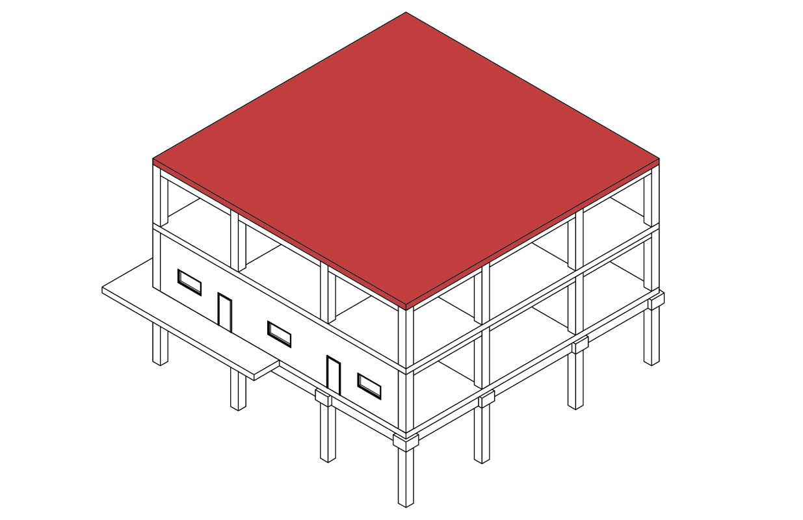
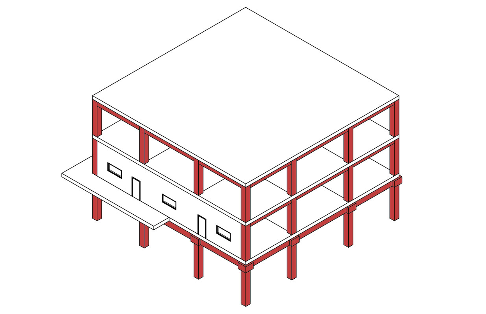
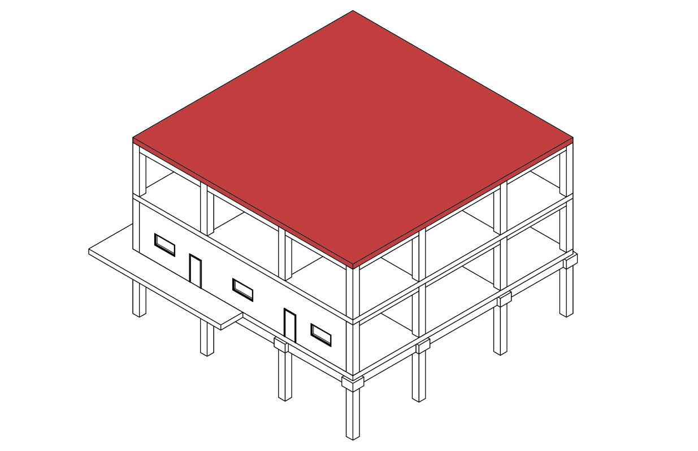
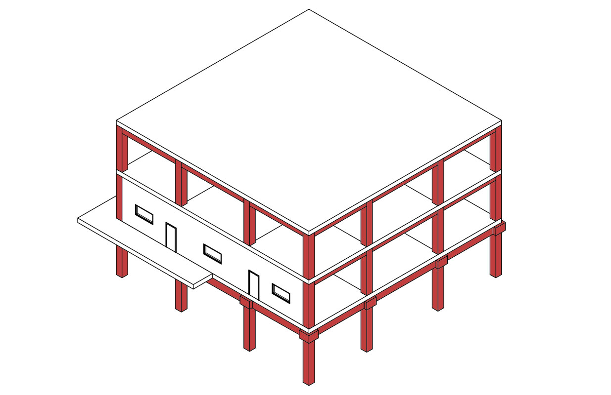
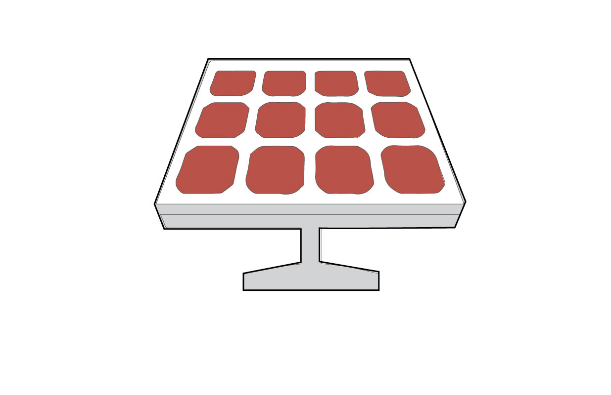
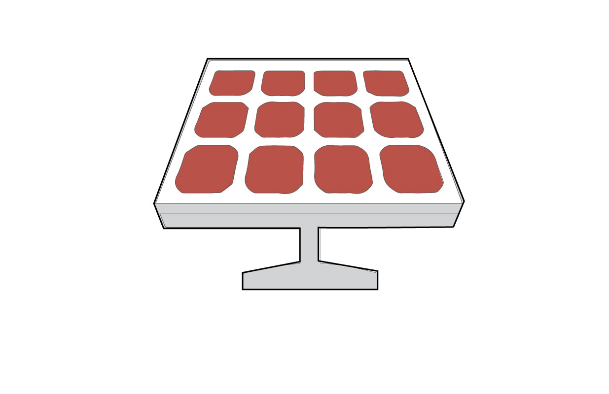

Elementos


 





 


Seleccione el sistema constructivo base a aplicar
{{sc}}
{{sc}}
{{sc}}
Materiales
{{material.key}}.
{{material.value.Material}}
{{material.value.Cantidad}}
{{material.value.Unidad}}
<
Seleccione una opción
{{pais.name_country}}
Seleccione una opción
{{estado.name_state}}
Seleccione una opción
{{ciudad.name_city}}
Edición de material
Nombre comercial
Cantidad
Unidad
Comentarios
Transporte de fábrica a sitio de proyecto
País
Tipo de transporte
Estado
Ciudad
Tiempo de vida
Tiempo de vida
Reemplazos